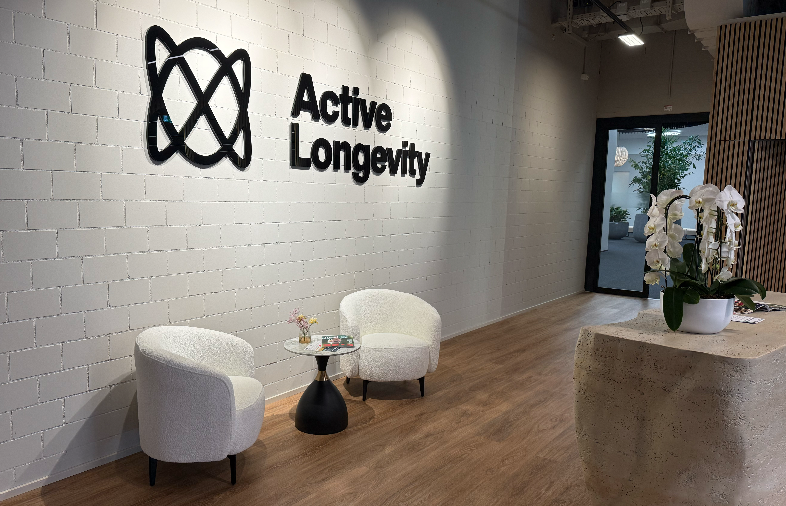

Anmoderation
Ein Feature über den Longevity-Boom und die Kunst, gesund zu altern.
Projekt Healthspan: Wenn Altern zum Geschäftsmodell wird
Während die Medizin früher vor allem Krankheiten heilte, will der neue Megatrend «Longevity» das Altern selbst verlangsamen. Doch was bringt der Hype um Eisbaden und High-Tech-Zellen wirklich? Ein Blick auf die Grenze zwischen wissenschaftlicher Revolution und geschicktem Marketing.
Eiskaltes Wasser
Der Sprung ins kalte Wasser
Dagi zögert nicht lange. Wenn andere gemütlich zu Mittag essen, geht sie mit einer Gruppe von Mitarbeitenden über den Mittag ins eiskalte Nass. Mit einer Mütze auf dem Kopf und Badekleidung steigt sie langsam in den alten Rhein. Nur sie gegen die innere Stimme, der Kälte entfliehen zu wollen.
Eisschwimmen – so funktioniert es

Dagi ist 60 Jahre alt, arbeitet im Büro und achtet bewusst auf ihre Gesundheit. Für sie beginnt Prävention nicht in einer Spezialklinik, sondern im Alltag. Neben dem Eisbaden bewegt sie sich viel an der frischen Luft: zu Fuss, auf dem Pferd oder auf dem Rad.
So wie Dagi am Rheinufer durch persönliche Disziplin versucht, ihre Selbstheilungskräfte zu aktivieren und mit Ernährung zu optimieren, so sucht heute auch eine ganze Industrie nach wissenschaftlichen Wegen, das Altern biologisch zu überlisten. Was bei Dagi als individuelles Mindset beginnt, mündet in einem globalen Forschungsfeld, das die Grenze zwischen natürlichem Verfall und technologischer Optimierung neu auslotet. Doch wie lässt sich dieses Streben nach ewiger Vitalität medizinisch begründen – und wo beginnt die blosse Vermarktung der Hoffnung?
Wissenschaft statt Anti-Aging
Was früher oft unter dem Schlagwort «Anti-Aging» lief, wird heute zunehmend wissenschaftlich untermauert. Dr. Natalia Trpchevska, wissenschaftliche Leiterin bei AYUN, versteht Longevity-Medizin als Versuch, nicht nur die Lebensdauer, sondern vor allem die gesunden Lebensjahre, die sogenannten «Healthspan» zu verlängern. Im Zentrum stehen laut ihrer biologischen Mechanismen wie zelluläre Seneszenz, mitochondriale Dysfunktion, chronische Entzündungen und epigenetische Veränderungen.
Was früher als «Anti-Aging» in Kosmetikregalen zu finden war, wird heute als «Longevity-Medizin» professionalisiert. Dr. Natalia Trpchevska, wissenschaftliche Leiterin bei AYUN, definiert den Trend als Versuch, die «Healthspan» zu verlängern – also die Lebensjahre, die ein Mensch bei guter Gesundheit und frei von chronischen Schmerzen verbringt. Im Zentrum stehen biologische Mechanismen wie die zelluläre Seneszenz oder chronische Entzündungen. Doch gerade weil der Markt schneller wächst als die klinische Evidenz, ist die Abgrenzung zentral.
Das Mindset der Profis
Nejc Hojc, ehemaliger Handball-Profisportler und heute Inhaber von «Active Longevity», sieht Longevity vor allem als eine proaktive Haltung. «Für uns ist Longevity kein Trend, sondern in erster Linie ein Mindset», sagt er.
Philosophie eines Profisportlers
Hojc stützt sich dabei auf drei Grundpfeiler: Training, Ernährung und Schlaf. Er warnt davor, den zweiten Schritt vor dem ersten zu tun. Für ihn sind High-Tech-Gadgets nur das «Topping» auf einer Torte, deren Boden aus harter Arbeit und Disziplin besteht. Gerade darin liegt eine wichtige journalistische Einordnung: Während viele Angebote im Longevity-Bereich mit Innovation werben, verweisen Fachleute immer wieder auf klassische Faktoren wie Bewegung, Erholung und gute Ernährung als wirksamste Mittel. Der Reiz des Neuen ist gross, aber die Grundlage bleibt erstaunlich unspektakulär.
High-Tech gegen den biologischen Zerfall
Während Nejc Hojc das Fundament im Lebensstil sieht, geht Uwe Brodda, Therapieleiter im «Longevity Center 108», einen Schritt weiter in Richtung Technologie. In seinem Zentrum kommen Geräte zum Einsatz, die auf Energie, Schwingung und Frequenz basieren – ein Feld, das die klassische Medizin oft kritisch beäugt, in der Longevity-Szene aber als «Medizin der Zukunft» gilt.
Wo Longevity wirklich ansetzen sollte nach Brodda
Dieser technologische Vorstoss ergänzt das Ziel, das auch Hojc verfolgt: Die grossen Volkskrankheiten gar nicht erst entstehen zu lassen. Für Hojc ist Longevity die Chance, jenen fünf chronischen Leiden vorzubeugen, an denen heute 80 bis 90 Prozent der Menschen sterben. Dazu gehören Herz-Kreislauf-Erkrankungen, Krebs, Demenz, Diabetes Typ II sowie degenerative Erkrankungen des Bewegungsapparats. Hier treffen sich die unterschiedlichen Ansätze: Weg von der Reparaturmedizin, hin zur proaktiven Erhaltung des Systems Mensch.
Zwischen Heilversprechen und Marketing
Doch wo viel Hoffnung ist, fliesst auch viel Geld. Nahrungsergänzungsmittel, Blutanalysen, Wearables, Spezialtests und exklusive Programme versprechen, den Körper messbar zu optimieren. Dr. Trpchevska warnt jedoch vor einem der grössten Missverständnisse im Feld: der Vorstellung, es gebe eine einzelne Intervention oder gar eine «Wunderpille», die Altern grundlegend aufhalte. Fortschritt entstehe schrittweise und basiere auf belastbarer Evidenz, nicht auf möglichst spektakulären Versprechen.
Auch für Nejc Hojc ist Longevity kein Ziel, das man mit einer schnellen Investition erreicht, sondern ein lebenslanger Prozess. Er betont, dass es keine Abkürzung gibt: Wer Fortschritte sehen will, muss bereit sein, über Jahre hinweg konsequent Zeit und Energie in die Grundpfeiler seiner Gesundheit zu investieren. High-Tech-Gadgets und exklusive Produkte sieht er dabei lediglich als das «Topping» auf einer Torte. Ohne ein stabiles Fundament aus Training, Ernährung und Schlaf bleibe jede technologische Optimierung wirkungslos. Longevity bedeutet für ihn deshalb vor allem, Verantwortung für den eigenen Körper zu übernehmen, statt auf die eine Entdeckung zu warten, die den biologischen Zerfall über Nacht stoppt.»

Die Zukunft: Ein Privileg für Reiche?
Ein kritischer Punkt bleibt: Longevity-Kliniken und spezialisierte Diagnostik sind teuer. In der Forschung wird daher zunehmend gefordert, dass Langlebigkeit zu einem Thema der öffentlichen Gesundheit werden muss. Die wichtigsten Säulen – Bewegung, Ernährung und Schlaf – sollten strukturell für alle gefördert werden, damit präventive Medizin nicht nur ein Privileg für Kunden von «Boutique-Kliniken» bleibt.
Fazit: Es gibt nicht die eine Lösung
Am Ende der Reise durch Labore, Trainingszentren und eiskalte Flüsse bleibt die Erkenntnis: Longevity ist kein geschlossenes Konzept, sondern ein Feld voller Spannungen.
Während die einen in der genetischen Analyse und Frequenztherapie den Schlüssel zur Unsterblichkeit suchen, mahnen andere zur Rückbesinnung auf das Wesentliche. Die Wissenschaft liefert zwar immer präzisere Daten, doch die Interpretation bleibt umstritten. Ist das Altern eine Krankheit, die man heilen kann, oder ein natürlicher Prozess, den wir lediglich würdevoll begleiten sollten?